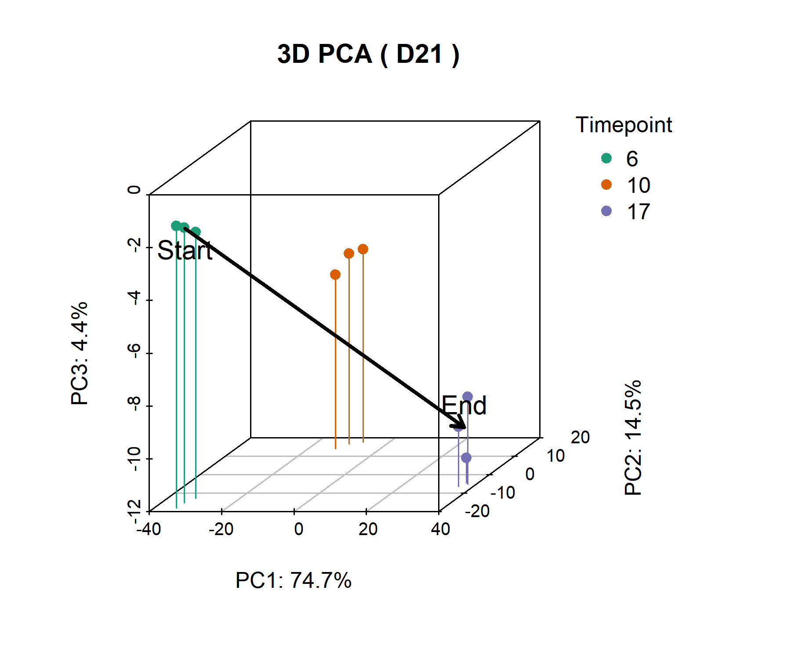
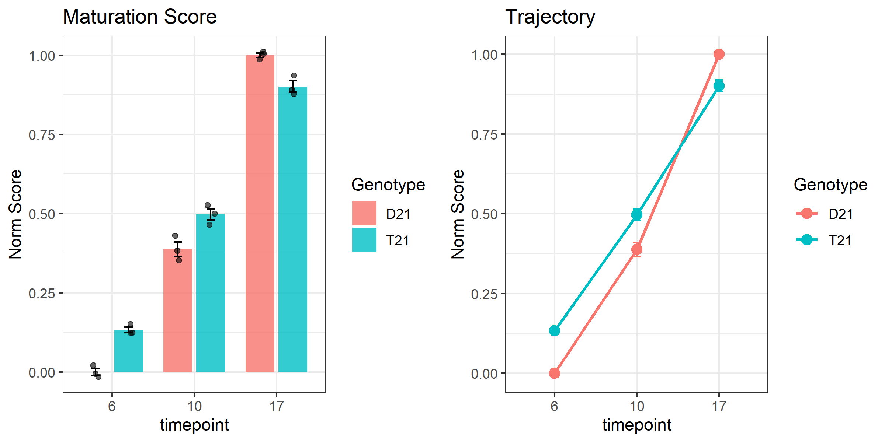

Code
library(DESeq2)
library(ggplot2)
library(dplyr)
library(tibble)
library(tidyr)
library(gridExtra)
library(scatterplot3d)Calculating a PCA-based Maturation Score to quantify differentiation progress. Basically projecting samples onto a vector defined by the D21 control timecourse (Day 6 -> Day 17).
Loading what we need. DESeq2 for the stats, Tidyverse for everything else.
library(DESeq2)
library(ggplot2)
library(dplyr)
library(tibble)
library(tidyr)
library(gridExtra)
library(scatterplot3d)taking metadata and counts + Using raw counts for LRT and VST for PCA/plotting.
# Paths
meta_file <- "dat/metadata/WC24_metadata_clean.rds"
raw_file <- "dat/counts/raw/WC24_filt_raw_counts.rds"
vst_file <- "dat/counts/vst/WC24_vst_counts.rds"
# Load up data
metadata <- readRDS(meta_file)
raw_counts <- readRDS(raw_file)
vst_counts <- readRDS(vst_file)
# quick chck
print("Meta dims:")[1] "Meta dims:"dim(metadata)[1] 18 9head(metadata) sample_id timepoint genotype stage rep isogenic
BA1D6_S1 BA1D6_S1 6 D21 neuroepithelium 1 WC24
BA2D6_S2 BA2D6_S2 6 D21 neuroepithelium 2 WC24
BA3D6_S3 BA3D6_S3 6 D21 neuroepithelium 3 WC24
BA1D10_S4 BA1D10_S4 10 D21 early neuroectoderm 1 WC24
BA2D10_S5 BA2D10_S5 10 D21 early neuroectoderm 2 WC24
BA3D10_S6 BA3D10_S6 10 D21 early neuroectoderm 3 WC24
genotype_timepoint isogenic_genotype_timepoint
BA1D6_S1 D21_D6 WC24_D21_D6
BA2D6_S2 D21_D6 WC24_D21_D6
BA3D6_S3 D21_D6 WC24_D21_D6
BA1D10_S4 D21_D10 WC24_D21_D10
BA2D10_S5 D21_D10 WC24_D21_D10
BA3D10_S6 D21_D10 WC24_D21_D10
isogenic_genotype_timepoint_rep
BA1D6_S1 WC24_D21_D6_1
BA2D6_S2 WC24_D21_D6_2
BA3D6_S3 WC24_D21_D6_3
BA1D10_S4 WC24_D21_D10_1
BA2D10_S5 WC24_D21_D10_2
BA3D10_S6 WC24_D21_D10_3Making sure samples match up and factors are set properly
# Align samples if needed
if (!identical(rownames(metadata), colnames(raw_counts))) {
common <- intersect(rownames(metadata), colnames(raw_counts))
metadata <- metadata[common, ]
raw_counts <- raw_counts[, common]
vst_counts <- vst_counts[, common]
}
stopifnot(all(rownames(metadata) == colnames(raw_counts)))
# Set cols
time_col <- "timepoint"
group_col <- "genotype"
# Fix factor levels. D21 control is 6, 10, 17
metadata[[time_col]] <- factor(metadata[[time_col]], levels = c(6, 10, 17))
metadata[[group_col]] <- factor(metadata[[group_col]])
# Control group for defining the vector
control_group <- "D21"finding temporally dynamic genes in the control group using LRT
# Subset D21 controls
ctrl_idx <- rownames(metadata)[metadata[[group_col]] == control_group]
meta_ctrl <- metadata[ctrl_idx, ]
raw_ctrl <- raw_counts[, ctrl_idx]
# DESeq2 hates ordered factors in design, so force it to be unordered here
meta_ctrl[[time_col]] <- factor(meta_ctrl[[time_col]], ordered = FALSE)
# Build dds
dds <- DESeqDataSetFromMatrix(countData = raw_ctrl,
colData = meta_ctrl,
design = as.formula(paste0("~ ", time_col)))
# Run LRT (full vs reduced)
dds <- DESeq(dds, test = "LRT", reduced = ~ 1)
res <- results(dds)
# Grab top 1000 significant genes
res_ordered <- res[order(res$padj), ]
sig_genes <- rownames(res_ordered)[which(res_ordered$padj < 0.05)]
n_top <- 1000
if (length(sig_genes) < n_top) {
top_genes <- sig_genes
message(paste("Found", length(sig_genes), "sig genes. Using all."))
} else {
top_genes <- rownames(res_ordered)[1:n_top]
message(paste("Taking top", n_top, "genes"))
}PCA on the top genes, then defining the start (day 6) and end (day 17) centroids
# Subset VST
vst_top <- vst_counts[top_genes, ]
# Run PCA
pca_res <- prcomp(t(vst_top), center = TRUE, scale. = TRUE)
# Get coords (top 3 PCs)
pca_coords <- as.data.frame(pca_res$x[, 1:3])
pca_coords$Sample <- rownames(pca_coords)
# Merge meta
pca_coords <- cbind(pca_coords, metadata[rownames(pca_coords), ])
# Calc centroids for control group
centroids <- pca_coords %>%
filter(!!sym(group_col) == control_group) %>%
group_by(!!sym(time_col)) %>%
summarise(
PC1_mean = mean(PC1),
PC2_mean = mean(PC2),
PC3_mean = mean(PC3),
n = n()
) %>%
ungroup()
# Define start/end
t_start <- levels(metadata[[time_col]])[1] # 6
t_end <- levels(metadata[[time_col]])[length(levels(metadata[[time_col]]))] # 17
origin <- centroids %>% filter(!!sym(time_col) == t_start)
endpoint <- centroids %>% filter(!!sym(time_col) == t_end)
# Maturation vector
origin_vec <- c(origin$PC1_mean, origin$PC2_mean, origin$PC3_mean)
endpoint_vec <- c(endpoint$PC1_mean, endpoint$PC2_mean, endpoint$PC3_mean)
ref_vec <- endpoint_vec - origin_vec
ref_mag <- sqrt(sum(ref_vec^2))
message(paste("Vector defined: Day", t_start, "-> Day", t_end))projecting all samples onto the differentiation vector: 0 = start and 1 = end
# Projection function
calculate_score <- function(pc1, pc2, pc3, origin, ref, mag) {
# Vec from origin
sample_vec_pc1 <- pc1 - origin[1]
sample_vec_pc2 <- pc2 - origin[2]
sample_vec_pc3 <- pc3 - origin[3]
# Dot product
dot_prod <- sample_vec_pc1 * ref[1] + sample_vec_pc2 * ref[2] + sample_vec_pc3 * ref[3]
# Normalize
score <- dot_prod / (mag^2)
return(score)
}
pca_coords$maturation_score <- mapply(calculate_score,
pca_coords$PC1,
pca_coords$PC2,
pca_coords$PC3,
MoreArgs = list(origin = origin_vec,
ref = ref_vec,
mag = ref_mag))
# Check means
pca_coords %>%
group_by(!!sym(group_col), !!sym(time_col)) %>%
summarise(mean_score = mean(maturation_score), .groups = "drop")# A tibble: 6 × 3
genotype timepoint mean_score
<fct> <fct> <dbl>
1 D21 6 3.30e-17
2 D21 10 3.88e- 1
3 D21 17 1 e+ 0
4 T21 6 1.33e- 1
5 T21 10 4.97e- 1
6 T21 17 9.01e- 1plotting the control trajectory
# Var explained
var_exp <- summary(pca_res)$importance[2, 1:3] * 100
pc1_lab <- paste0("PC1: ", round(var_exp[1], 1), "%")
pc2_lab <- paste0("PC2: ", round(var_exp[2], 1), "%")
pc3_lab <- paste0("PC3: ", round(var_exp[3], 1), "%")
# Filter for control only
pca_coords_ctrl <- pca_coords %>% filter(!!sym(group_col) == control_group)
# Colors (no black for Day 6)
cols <- c("#1B9E77", "#D95F02", "#7570B3")
cols_mapped <- cols[as.numeric(pca_coords_ctrl[[time_col]])]
# define plotting function to avoid duplication
plot_pca_3d <- function() {
# Scatterplot3d with manual margin adjustments
s3d <- scatterplot3d(x = pca_coords_ctrl$PC1,
y = pca_coords_ctrl$PC2,
z = pca_coords_ctrl$PC3,
color = cols_mapped,
pch = 19,
type = "h",
main = paste("3D PCA (", control_group, ")"),
xlab = pc1_lab,
ylab = pc2_lab,
zlab = pc3_lab,
angle = 45,
scale.y = 0.7,
y.margin.add = 0.2,
mar = c(5, 5, 4, 7))
# Arrow
s3d_coords <- s3d$xyz.convert(x = c(origin_vec[1], endpoint_vec[1]),
y = c(origin_vec[2], endpoint_vec[2]),
z = c(origin_vec[3], endpoint_vec[3]))
arrows(x0 = s3d_coords$x[1], y0 = s3d_coords$y[1],
x1 = s3d_coords$x[2], y1 = s3d_coords$y[2],
lwd = 3, col = "black", length = 0.1)
text(s3d_coords$x[1], s3d_coords$y[1], labels = "Start", pos = 1, cex = 1.2)
text(s3d_coords$x[2], s3d_coords$y[2], labels = "End", pos = 3, cex = 1.2)
# Legend outside
par(xpd = TRUE)
legend("topright", inset = c(-0.15, 0), legend = levels(pca_coords_ctrl[[time_col]]),
col = cols, pch = 19, title = "Timepoint", bty = "n", cex = 1.0)
}
# Save plot (Smaller dimensions)
png("plots/pca_trajectory_plot.png", width = 6, height = 5, units = "in", res = 300)
plot_pca_3d()
dev.off()unigd
2 # show plot in rmd
plot_pca_3d()
Barplot and Lineplot.
# summary stats
score_sum <- pca_coords %>%
group_by(!!sym(group_col), !!sym(time_col)) %>%
summarise(
mean = mean(maturation_score),
se = sd(maturation_score) / sqrt(n()),
.groups = "drop"
)
# 1. Bbarplot
p_bar <- ggplot(score_sum, aes(x = !!sym(time_col), y = mean, fill = !!sym(group_col))) +
geom_col(position = position_dodge(width = 0.8), width = 0.7, alpha = 0.8) +
geom_errorbar(aes(ymin = mean - se, ymax = mean + se),
position = position_dodge(width = 0.8), width = 0.2) +
geom_point(data = pca_coords,
aes(x = !!sym(time_col), y = maturation_score, group = !!sym(group_col)),
position = position_jitterdodge(jitter.width = 0.2, dodge.width = 0.8),
color = "black", size = 1.5, alpha = 0.6, show.legend = FALSE) +
theme_bw() +
labs(y = "Norm Score", title = "Maturation Score", fill = "Genotype")
# 2. lineplot
p_line <- ggplot(score_sum, aes(x = !!sym(time_col), y = mean, group = !!sym(group_col), color = !!sym(group_col))) +
geom_errorbar(aes(ymin = mean - se, ymax = mean + se), width = 0.1, size = 0.5) +
geom_line(size = 1) +
geom_point(size = 3) +
theme_bw() +
labs(y = "Norm Score", title = "Trajectory", color = "Genotype")
grid.arrange(p_bar, p_line, ncol = 2)
Saving files
ggsave("plots/maturation_scores_barplot.png", p_bar, width = 5, height = 4, dpi = 300)
ggsave("plots/maturation_scores_lineplot.png", p_line, width = 5, height = 4, dpi = 300)
write.csv(pca_coords, "results/maturation_scores.csv")